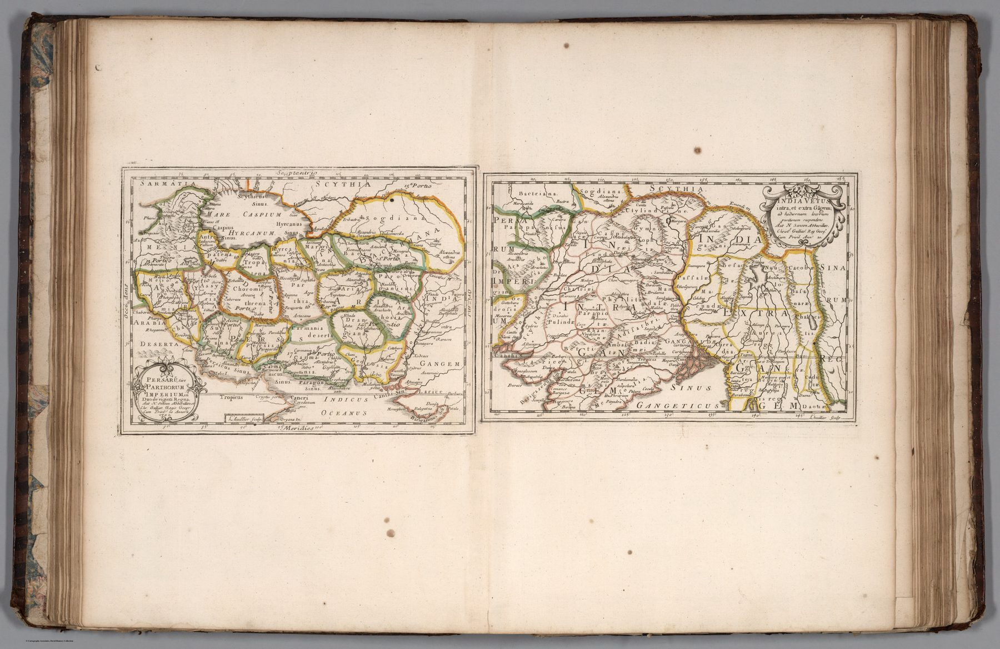

← Baroque Mughals and Companies

Ancient and modern geography
The Sanson atlas deliberately placed classical geography beside contemporary maps. This sheet contains two ancient worlds on one page: the Persian and Parthian empires at left and ‘Old India’ at right. It belongs to a Sanson atlas assembled at Paris around 1697–1705.
Reconstructing India from texts
India Vetus uses the names and divisions of Greek and Roman geography rather than those of the early eighteenth century. Rivers, regions and peoples are arranged as scholarly evidence. The map is consequently historical even though it is drawn with the conventions of contemporary French cartography.
Comparison as method
The same house mapped India twice – as the Mughal empire of the present and as the India of Strabo and Ptolemy. To know a country was to set the ancient account beside the modern one.
The gaze
Persia and India share the page as neighbours in the ancient record. This is the version of the subcontinent in which a Paris reader checked the ancients against the present, river by river and people by people. Knowing India, around 1700, still began with knowing what the Greeks had said about it.
In the Deccan timeline